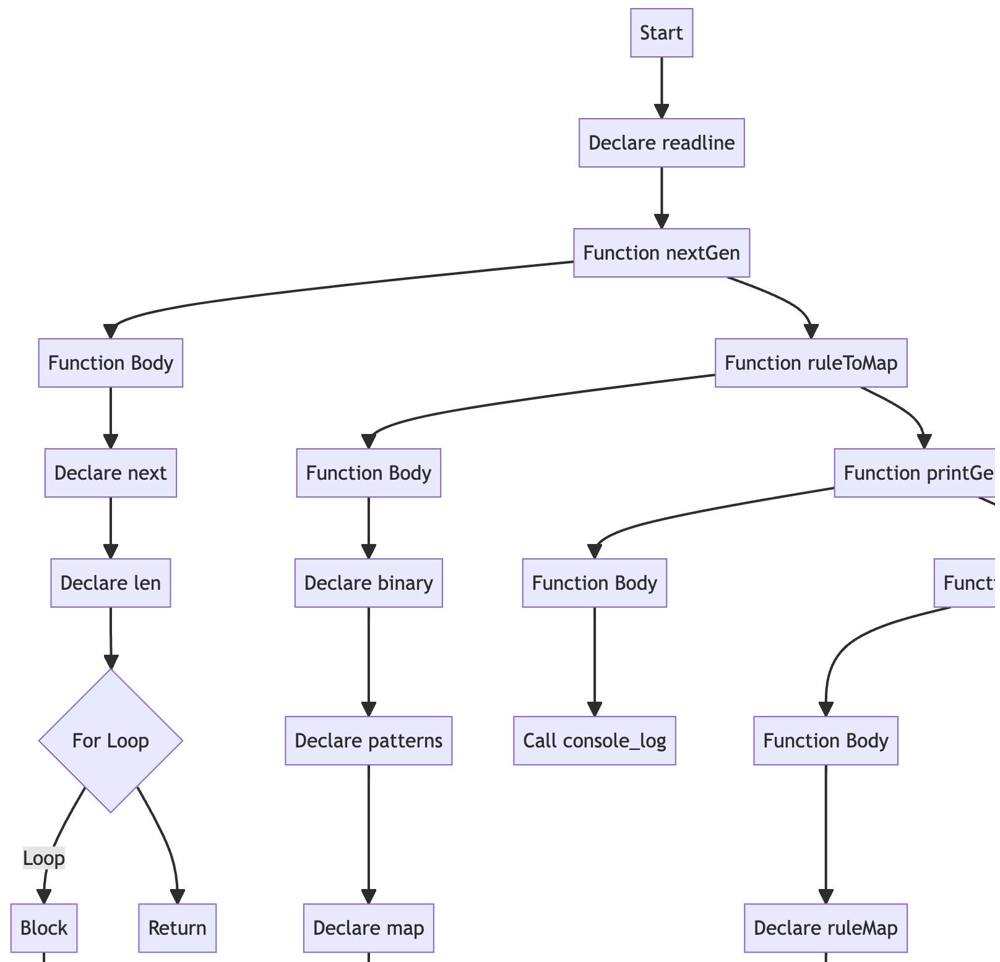

Decompiling Javascript Code
Curran Robertson
April 26, 2025

So, the title may be a little confusing, because Javascript is just-in-time compiled. Just-in-time compilation
is when the code is translated into machine code at runtime rather than compiled first, and then run as machine code. (ref. 1)
The purpose of compilation is to translate a higher-level, and more human readable language into
machine code, which is run by the CPU. This increases the efficiency of the human-computer
system, because machine code is hard to read or write by humans.
LLM's have made the creation of code so fast that the human becomes an extreme bottleneck
in comprehending the software and making changes. Javascript, once a high level language, has become low level
in that the computer can build Javascript straight from English faster than the human can read or write the Javascript.
This can cause security vulnerabilities stemming from a lack of human awareness or comprehension.
It can also make fixing bugs difficult. It's comparable to trying to read through numerical machine code to find software bugs.
LLM's sometimes build unique software in a way that the developer did not intend or foresee, forcing the developer to read through all
the code just to ask the LLM to make significant structural changes and read through all the code over again, make the changes
themselves, or just run with the as-built architecture.
One solution to this is to compile directly from text to machine code. This is essentially what Replit has done with their
cloud IDE platfrom, which creates apps directly from text. (ref. 2) A sufficiently "hardened" compiler can help prevent security exploits (ref. 3). This
could probably be addressed using rule based methods in LLM API's engineered for software development.
Another solution is to "decompile" high level language codebases into flowcharts. Humans can read the structure of code in flowcharts
faster than Javascript, which makes editing the code architecture faster. I tried this out here:
Decompiler
You could imagine future software engineers looking at Javascript or C the way current engineers look at machine code.
The bandwidth issue that LLM's cause between humans and high level programming language will require novel, yet inspired techniques to bridge
the gap.
1. Just-In-Time Compilation
2. Replit
3. Compiler Hardening